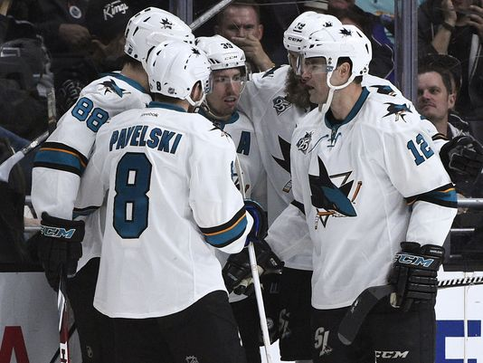
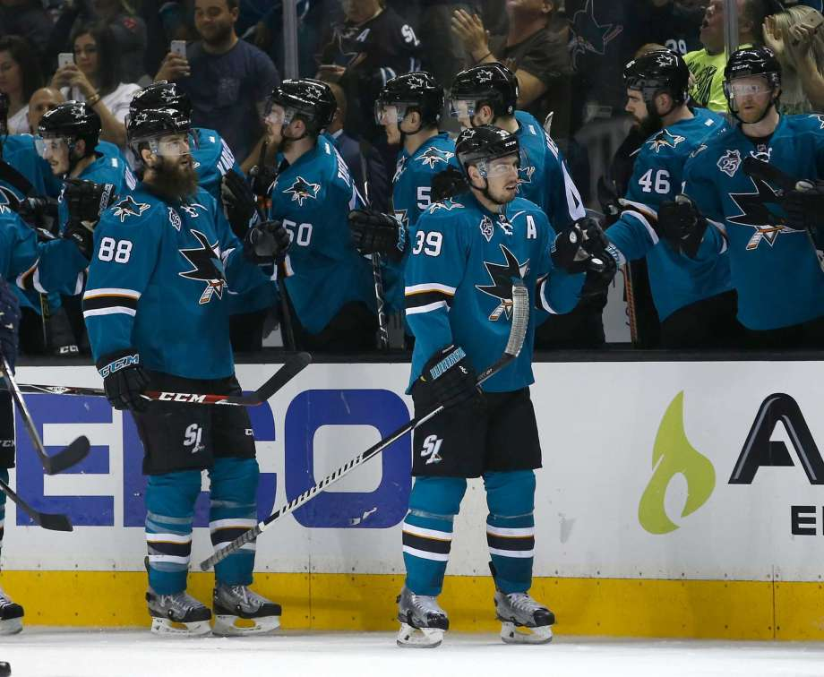

Joe Pavelski's late goal gives Sharks 2-0 series edge over Predators
Posted On April 30th, 2016
SAN JOSE, Calif. -- Joe Pavelski scored the tiebreaking goal with 2:40 left in regulation and Martin Jones stopped 36 shots to lead the San Jose Sharks to a 3-2 victory over the Nashville Predators on Sunday night and a 2-0 lead in their second-round playoff series. Logan Couture added a power-play goal and Joe Thornton scored an empty-netter to put the Sharks in control as the series shifts to Nashville for Game 3 on Tuesday night. San Jose won the most road games in the NHL this season and all three in Los Angeles in the first round.
Mattias Ekholm tied the game earlier in the third and Ryan Johansen also scored for Nashville, but the Predators head home from California in much worse shape than they did in the first round when they won the first two games in Anaheim on the way to taking the series in seven games. Pekka Rinne made 21 saves.
After San Jose blew a one-goal lead earlier in the third, the top line delivered when it mattered most. Thornton slid a cross-ice pass to Matt Nieto, whose initial shot was stopped by Rinne. But Pavelski batted the rebound in for his sixth goal of the playoffs to give the Sharks the lead. Thornton scored an empty-net goal that proved crucial when Johansen scored with 3.6 seconds left for Nashville.
Rinne had helped keep Nashville in the game long enough to get the equalizer midway through the third. With San Jose leading 1-0, Rinne robbed Nick Spaling with a pad save on a 2-on-1 with San Jose short-handed. A few minutes later, Ekholm got the equalizer when his shot from the high slot got past a screened Jones to make it 1-1.
The Sharks scored first following an odd penalty late in the second period. Nashville defenseman Roman Josi tried to rush off the ice after a bad line change to avoid a too many men penalty, but jumped into the Sharks bench because he couldn't reach his own in time. That move shocked the San Jose players but didn't avoid the penalty and the Sharks made Nashville pay for the mistake. Early on the ensuing power play, Brent Burns fired a point shot on net that Rinne stopped with his pads. But Couture jumped on the rebound and knocked it in with 1:24 left for his third goal of the series.
Burns and the rest of the Sharks had struggled to get shots on net before that with Nashville blocking five shots by Burns before he finally got one to Rinne off a deflection by Pavelski. Even when they did manage to get shots through the defense, Rinne was there to stop them. His best sequence came early in the second period when Joonas Donskoi slid a pass to Couture, whose shot from the slot was stopped by Rinne. Donskoi got the rebound and appeared to have an empty net to shoot at but Rinne slid over to make another save.
The power-play goal by Couture was San Jose's third in its first five chances with the man advantage this series as special teams have played a major role in the Sharks' success the past two games San Jose even killed a penalty for too many men in the ice shortly before Couture's goal as Nashville fell to 2-for-31 on the power play this postseason.
Game notes The Predators have lost all six postseason games they have played in San Jose, getting outscored 23-12. ... F Craig Smith returned to the lineup for Nashville after missing Game 1 with a lower-body injury.